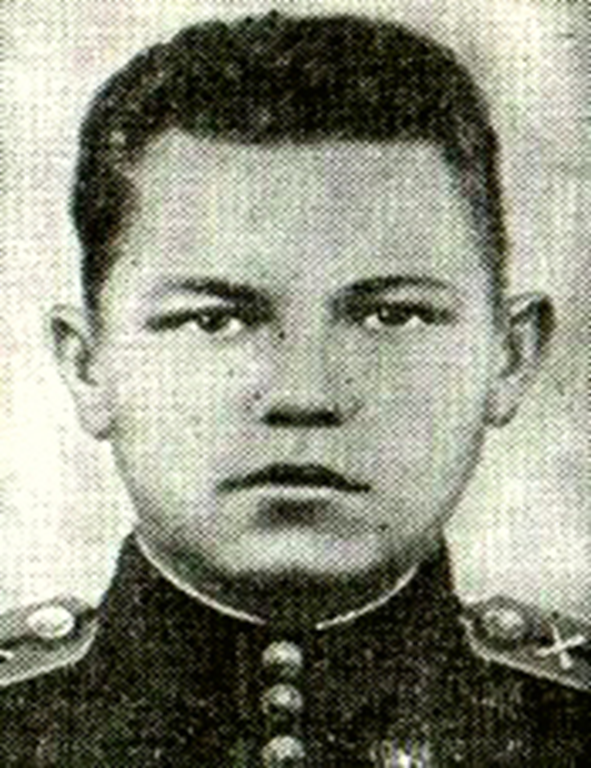

Фёдор Павлович Хохряков родился в 1925 году в селе Юговское Кунгурского района. Начальное образование получил в Юговской школе. В период с 1936 по 1941 год (5-9 класс) учился в Юго-Осокинской (Калининской) средней школе. С июля 1941 по март 1943 года работал помощником счетовода в колхозе «Всходы коммуны».
"Когда же грянул гром сражений
Войны с фашистскою ордой,
Как патриот по положенью
Он стал бойцом в армейский строй.
Учился в школе комсостава
Потом в дыму войны, в огне.
«Бой с врагом не ради славы,
А ради жизни на земле».
Его девиз: «Назад ни шагу
Солдату путь один – вперёд
И взвод его с большой отвагой
По вражьим танкам метко бьёт.
Гремит сражение полсуток
Врагов на запад гонит страх,
Но и герою не до шуток:
Разбиты пушки в пух и прах.
Погибли люди из расчётов,
В живых оставшимся приказ:
«Не ждать танкистов и пехоту.
Идти к своим, прикрою вас».
Горячей летнею порою
В кольце взбесившихся врагов
Пал смертью храбрых, пал героем
Комвзвода Фёдор Хохряков."
Лето 1944 года. Автомашины с орудиями выехали на заре и, поднимая тучи пыли покинули маленькую Белорусскую деревушку Видомля. Впереди с разведчиками и связистами ехал командир батареи, за ним с расчетами четырех орудий следовал командир огневого взвода младший лейтенант комсомолец Фёдор Хохряков.
Бой разыгрался 18 июля. С раннего утра вражеские самолеты бомбили наш передний край. На окопы и огневые позиции советских воинов обрушились тысячи снарядов и мин. Кода утихла канонада в атаку пошли танки и автоматчики.
Орудия Фёдора Хохрякова стояли около шоссе, по которому устремились вражеские машины. Танки были уже близко. «По танкам. Ориентир второй. Влево пятнадцать. Отражать ноль… Наводить под башню. Огонь!» Снаряд разорвался чуть левее цели. Второй точно попал под башню. Танк остановился. Когда открыли огонь по второй, третьей машине противника, на позиции взвода начали рваться снаряды. Уничтожен ещё один танк. Навести орудие на четвёртую машину он не успел – упал смертельно раненый наводчик.
К орудию встал Фёдор Хохряков. Он только взялся за кольцо панорамы, чтобы точнее установить прицел, как осколок вражеского снаряда ранил его в грудь.
Метким выстрелом Ф.П. Хохряков поразил ещё один фашистский танк. В это же время прямым попаданием было разбито четвертое орудие. Вслед за ним третье, потом второе...
Один за другим выбывали из строя артиллеристы. Когда вражеские машины начали окружать огневую позицию, артиллеристы пустили в ход автоматы. Немецкий танк раздавил гусеницами последнюю пушку. Горстка советских солдат оказались окруженными фашистской пехотой. Но кольцо окружения ещё не было сомкнуто: по небольшой лощине оставался свободный проход.
«Отходить всем к лощине. Через нее пробираться в третий дивизион» - приказал Федор Хохряков. «А вы…?, - спросили солдаты, когда увидели, что командир лёг за небольшой бугор. «Выполняйте приказ!» С этими словами Фёдор Хохряков дал из автомата очередь по фашистам, чтобы отвлечь внимание уходящих в лощину раненых артиллеристов. Через несколько минут кольцо вокруг советского офицера замкнулось.
«Рус…,сдавайс!» - кричали гитлеровцы, в ответ прогремела автоматная очередь. Младший лейтенант старался оттянуть время. А по возможности и пробить брешь в кольце, чтобы уйти к своим. Но вскоре в диске автомата кончились патроны. Офицер вытащил пистолет и отбивался до последнего патрона. Последний приберёг для себя…
Фёдор Павлович Хохряков пал смертью храбрых в бою. Своим подвигом и личным примером он заслужил самую высокую награду Родины.
Указом Президиума, Верховного Совета СССР от 25 сентября 1944 года Фёдору Павловичу Хохрякову было посмертно присвоено звание Героя Советского Союза.